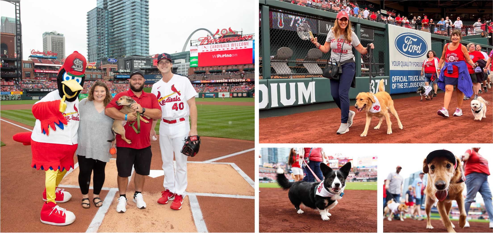

Purina Partners with the St. Louis Cardinals

Get your tickets today for the 18th Annual Purina Pooches in the Ballpark on Saturday, May 6th when the Cards host the Detroit Tigers at 1:15 PM. Fans who purchase a special Pooches ticket can enjoy the game with their pooch in style, featuring all-inclusive seats with food and drinks included! Tickets buyers will receive an email from the Cardinals and Purina this spring outlining requirements for dog entry into the stadium. All participants will receive a Purina goodie-bag. All dogs need to be at least 6 months old.
There's an event for every kind of fan.
Certain Tickets Come With Different Perks!.
- Free Bobblehead
- Giveaway Hats
- T-Shirts
- Free Food